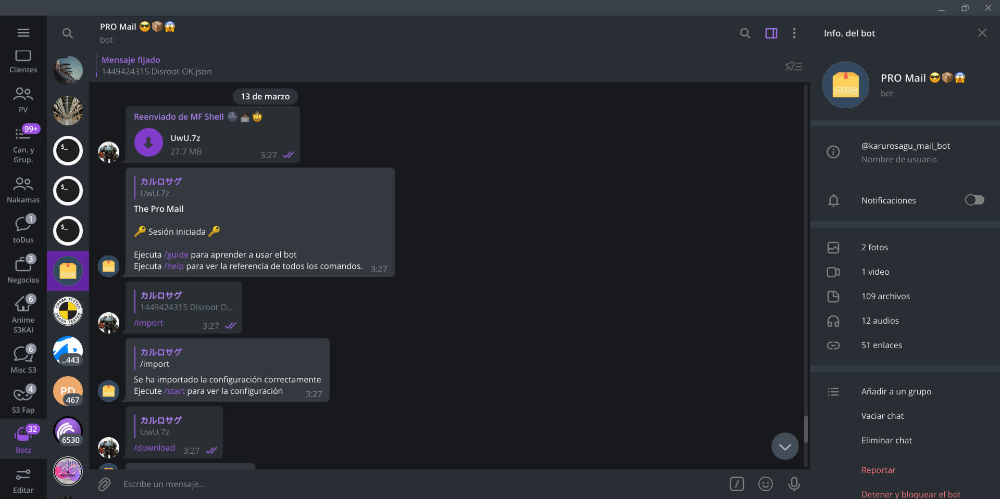
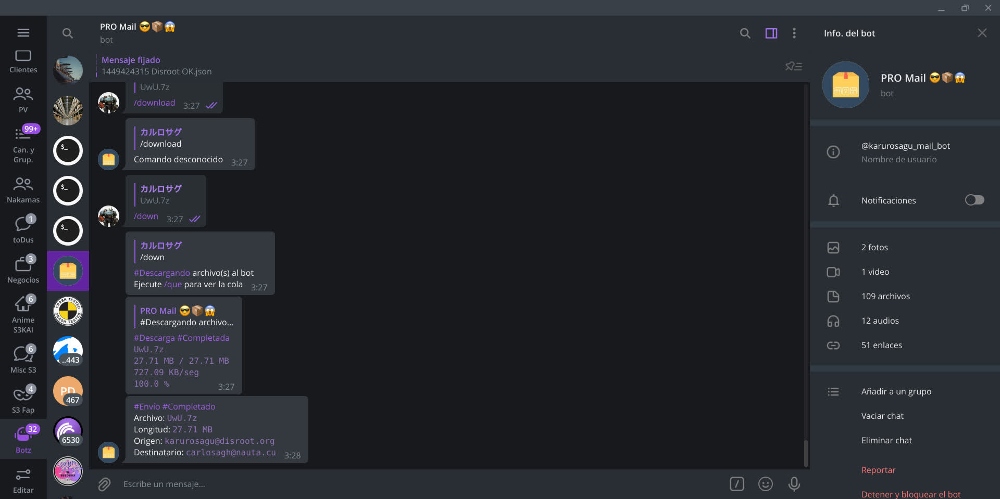
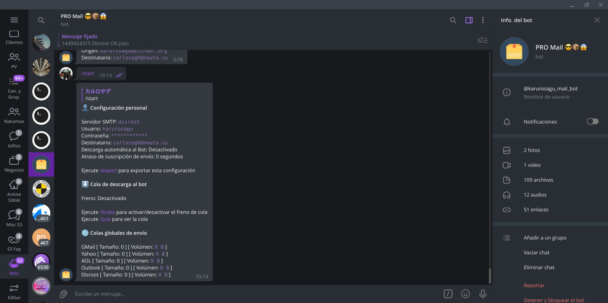

Guía de PRO Mail
¿Qué es esta página?
Esta página es la guía completa del bot PRO Mail, si no sabe usar el bot, lea la guía completa hasta el final y luego vea la referencia de comandos según lo que le haga falta hacer
📚 Contenido



🤔 Introducción
PRO Mail es un bot creado específicamente para enviar archivos por correo. Al igual que su hermano mayor, MF Shell, este es otro bot "anormal", pero más fácil de usar
Características de PRO Mail:
→ Altamente configurable
→ Soporte para múltiples proveedores SMTP
→ Procesamiento y envío masivo de archivos
→ Funciones de encolado y control de cola
Para usar este bot necesita 2 cosas:
→ Una dirección de correo (y su correspondiente contraseña, claro) para usar en el envío, que debe ser de uno de los SMTP soportados
→ Una dirección de correo destinatario a la cual va a llegar el correo
Si es cubano y vive en Cuba, vea esto:
Este bot funciona de la siguiente forma:
Descarga del archivo al bot → Análisis → Suscripción → Envío
1 - Descarga del archivo al bot. Los archivos se descargan al bot (Véase Desgargas al bot) en forma de cola y una vez dentro se analizarán
2 - Análisis. Dentro del bot se analiza si el archivo debería ser o no "picado" en partes y todo lo que esto implica (Véase /slicer), si se debería calcular un has MD5 del archivo (Véase /hasher), etc... todo esto antes de suscribirlo a la cola de envío
3 - Suscripción. El archivo se suscribe a una cola de envío dependiendo del servidor SMTP que se usará para el envío
4 - Envío. Cada archivo en cada cola global de envío se procesa, se le arma un mensaje y se envía al destinatario, el sistema de envío funciona independientemente de cada usuario y no se puede cancelar ni detener
Avertencia:
PRO Mail sólo se ocupa del proceso de envío, la llegada del contenido a su destinatario dependerá únicamente del destinatario en si y sus características, un éxito del envío junto a una no llegada del mensaje no implica en si un error de envío desde el punto de vista técnico y del bot
✉️ Servidores SMTP
El servidor SMTP es el servicio del cual se depende para realizar los envíos
Tenga en cuenta que su cuenta de envío debe ser configurada para ser usada desde el bot. La configuración depende del servidor SMTP al que pertenezca la cuenta, algunos dejan usar la contraseña directamente a cambio de un autorizo, otras necesitan lo que se conoce como una contraseña de aplicaciones externas, que es la vía más común, y otras varían según los ajustes de seguridad impuestos. El autor recomienda usar una cuenta que no sea su cuenta personal para realizar los envíos
Hay 5 servidores SMTP soportados por el bot:
GMail
Es el SMTP predeterminado en PRO Mail
Para poder usar su cuenta con el bot, debe usar una contraseña de aplicaciones, para ello debe tener creado un 2FA para su cuenta de Google
Es bien sabido, que en GMail (y google en general) hay restricciones en cuanto a los tipos de archivos que se pueden enviar. En el caso específico de los envíos desde GMail, el bot archiva de forma automática los archivos en TAR antes de realizar los envíos, de esta forma se puede enviar prácticamente cualquier archivo mediante GMail, salvo algunos casos específicos
Acerca de las contraseñas de aplicaciones, léase este post
Yahoo
Para usar su cuenta de en el bot, debe crear una contraseña de aplicaciones:
En su pantalla principal → Su foto de perfil → Información de la cuenta → Seguridad de la cuenta → Generar contraseña para aplicaciones
La contraseña generada es la que debe usar en el bot en lugar de su contraseña real
En este post hay imágenes de cómo se crea una contraeña de aplicaciones en Yahoo (si no se ven las imágenes desde el navegador, abra Telegram directamente)
AOL
Exactamente lo mismo que Yahoo
Outlook
No es necesario ni pedir un autorizo, puede usar su contraseña directamente, sin embargo, la opción de contraseña de aplicaciones debe existir
De forma predeterminada no hay ningún tipo de seguridad aplicada
Disroot
Puede usar su contraseña directamente
En este post hay detalles de las experiencias del autor usando Disroot
🛑 Límites
El bot en sí no tiene un límite claro en cuanto a número de mensajes, y el tamaño máximo de cada mensaje es en realidad producto a la existencia del comando /slicer
Tenga en cuenta que tanto los servicios de envío como los destinatarios imponen límites en cantidad de mensajes y tamaño ya sea total o por cada mensaje
También debe tener en cuenta cómo el correo usado para el envío (SMTP) trata los mensajes, ya sea si los conserva después de enviar o si el proveedor es consciente de que está siendo usado por un bot y los borra automáticamente. En el caso de ser lo primero, debe ver si hay alguna configuración para no acumular los mensajes y en el peor de los casos, debe ir periódicamente a borrar los mensajes
📦 El tamaño 'inflado' durante el envío
Esto ha traído mucha confusión, es un tema que va más allá de este bot, porque es un tema que ocurre en general con cualquier cliente de correo electrónico
Durante el proceso de creación de un mensaje, los archivos adjuntados se codifican (el estándar es base64) y el tamaño del mensaje aumenta alrededor de un 33% aproximadamente, es por esto que no debe enviar a un tamaño exacto, debe enviar mucho menos
En resumen, no es lo mismo el tamaño del archivo que el tamaño del mensaje, el tamaño del mensaje es más grande que el archivo y es el tamaño del mensaje lo que se tiene en cuenta para realizar el envío y es el verdadero espacio que ocupa en el buzón
Sin embargo, no se preocupe, para cuando mande a descargar los mensajes, en algún momento sus adjuntos se decodifican (siempre). Esto depende del cliente de correo que use, en el caso de clientes como Deltachat, por ejemplo, los mensajes se descargan codificados y se decodifican una vez están en el dispositivo, sin embargo, en un webmail el archivo es decodificado en la red al solicitar su descarga y usted termina descargando el archivo real